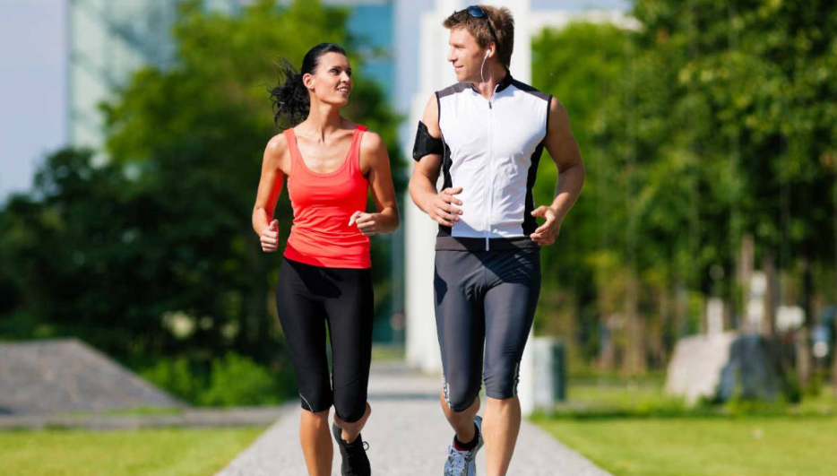

Descubre los mejores lugares para correr en Buenos Aires
Bien vale la pena reservarse un par de horas del fin de semana para conocer, desde un lugar distinto, las atracciones más emblemáticas de la Ciudad. Sí, corriendo. Más despacio o más rápido, bajo el sol y con toda la adrenalina posible. Un plan perfecto para descubrir Buenos Aires en un recorrido especialmente diseñado para los vecinos, a través de los circuitos de running urbano por los barrios de Palermo, Puerto Madero, La Boca o Centro.
Estos circuitos son guiados por profesores de educación física de la Subsecretaría de Deportes de la Ciudad y duran dos horas aproximadamente –desde la entrada en calor hasta la elongación final-, con paradas breves en las que se conoce la historia de cada una de las atracciones. Las visitas se realizan en español. Los grupos son de 20 personas, es necesario inscribirse previamente en la web y tener más de 18 años.
“El auge del running se viene potenciando desde la Ciudad. El Gobierno ha estado recuperando distintos espacios públicos para el deporte. Las más de 70 carreras de calle, incluidas las cuatro media maratón y la maratón, fortalecen un calendario nutrido de eventos deportivos", dijo Luis Lobo, el subsecretario de Deportes porteño.
Mariano Flor, alumno del Programa Buenos Aires Corre (BAC) y especialista en carreras de 10K, cuenta cómo el running lo ayudó a cambiar su forma de vivir: “Disfruto cuando corro, no lo tomo como una obligación. Me gusta mantener un ritmo, salgo y siento libertad, es una actividad que te fortalece para muchas cosas. Correr se convirtió en mi estilo de vida”.
Julio Montenegro, en tanto, cuenta por qué elige el Running: "No hay edad para empezar a correr. Yo lo hice a los 50 años. Nunca antes había realizado actividad física y un día viendo un partido de fútbol me dieron ganas de salir a correr. Al estar prácticamente nuevo, sin ninguna lesión ni desgarro en el pasado me pareció que no tendría problema en hacer este deporte. Siempre se puede empezar a hacer actividad, no importa la edad. Lo que sí importa es superarse a sí mismo. El running me cambió la vida física y mentalmente."
¿Por qué circuito vas a empezar?
Palermo - 9 km
Punto de salida: Centro de Información Turística (CIT) Planetario. Av. Sarmiento 4200 y av. Figueroa Alcorta.
Recorrido: MALBA, Jardín Japonés, Planetario, Rosedal de Palermo, Monumento a los Españoles, Museo de Arte Decorativo, Museo Nacional de Bellas Artes, Facultad de Derecho.
Cuándo: 2º sábado y 4º domingo del mes a las 10 horas.
Puerto Madero - 6km
Punto de salida: CIT Puerto Madero. Manuela Gorriti 200.
Recorrido: Puente de la Mujer, Parque Mujeres Argentinas, Monumento al Tango y Monumento a Fangio, Iglesia Nuestra Señora de la Esperanza, Reserva Ecológica, Glorieta, Museo Fortabat.
Cuándo: 3º sábado y 1º y 5º domingo del mes a las 10 horas.
La Boca - 7 km
Punto de salida: CIT Caminito. Av. Don Pedro de Mendoza 1830.
Recorrido: Palacio Lezama, Usina del Arte, Casa Amarilla, Estadio Boca Juniors, Caminito, Puente Nicolás Avellaneda.
Cuándo: 1º y 5º sábado y 3º domingo del mes a las 10 horas.
Centro - 7km
Punto de salida: Leandro N. Alem y Sarmiento
Recorrido: Obelisco, Catedral Metropolitana, Casa Rosada, Edificio Libertador, Paseo de la Historieta, Manzana de Las Luces, Cabildo, Café Tortoni, Palacio Barolo, Congreso de la Nación, Teatro San Martín, Palacio de Justicia.
Cuándo: 4º sábado y 2º domingo del mes a las 10 horas.

¿A qué edad puede empezar a correr un niño?
Vestidos de todos los colores, mayores y jóvenes, con todo tipo de artilugios para medir el pulso, las distancias, los tiempos… Hace ya años que vemos las calles llenas de personas corriendo. Pero hay algo que suele faltar: los niños. Muchos runners tienen hijos y ganas de llevárselos a zamparse unos kilómetros montaña arriba o junto al mar. Y sí, parece un buen plan, sobre todo el último, es decir, en terreno llano.
A pesar de que el deporte es siempre recomendable, hay cuestiones importantes a tener en cuenta antes de que un niño empiece a correr. Esas condiciones, según los expertos, determinan desde el terreno en el que deberían practicar hasta las consignas que debemos darles al hacerlo. Vayamos por partes. Lo más importante es la edad del niño. Y aquí todos coinciden: hasta los cinco años mejor ni intentarlo. Y ni soñar con un maratón hasta los 18.
La complexión física de una persona de menos de cinco años todavía no se ha desarrollado del todo y lo hacen de maneras diferentes a los adultos. Por ejemplo, tal y como informan desde la International Marathon Medical Directors Association -entidad formada por profesionales de la medicina deportiva-, el desarrollo de los niños determina la forma en la que deben hacer deporte. Sus huesos, sin ir más lejos, crecen más rápido que los músculos y los tendones durante los procesos intensos de crecimiento, lo que podría afectar a su flexibilidad y hacerlos más proclives a las lesiones. Además, como dan pasos más cortos, su impacto contra el pavimento o la tierra es más frecuente, lo que también les llevaría a lesionarse más.
Hasta los ocho años, indican los expertos, no se pueden correr más de dos kilómetros y a partir de esa edad hasta los 10, no es recomendable superar los tres.
Decíamos, pues, que a partir de los cinco años, los pequeños pueden empezar a probar pero siempre como un juego, nunca como una competición. La psicología es tan importante como la biología. Porque la presión que se puede ejercer sobre el niño puede llevarle a quemarse antes de tiempo, a vivir una carrera como una pesadilla y a odiar, al final, ese deporte que queríamos inculcarle. “Es un fenómeno real”, advierten desde la IMMDC, “puede tener un efecto contrario al que se intenta”.
La complexión del pequeño es otra de las cuestiones que hay que tener en cuenta. Se tiene la idea de que para ser un buen corredor hay que tener un cuerpo atlético, algo que suele ser habitual. Así que no todos los niños tienen la misma predisposición física para el deporte. “Podríamos llegar a provocar desórdenes alimentarios cuando esos niños, a los que se les ha vendido una idea de físico que no tienen, lleguen a adultos”.
No existen reglas pero sí recomendaciones que todos señalan por igual. En los niños, el mensaje recibido es más importante que sus ganas de querer hacer deporte. La International Marathon Medical Directors Association cuenta también la intensidad de los entrenamientos. Sean del deporte que sean. Y para no equivocarnos, ofrecen una guía simple y fácil: que un niño no entrene a la semana más días de los años que tiene.
Recordemos, siempre, la primera consigna que nos dan desde esta asociación médica: “Un niño no es un adulto en pequeño”. Así que por mucha ilusiones que les haga a algunos, salir a correr con un hijo pequeño no es una buena idea.

Descubre los mejores lugares para correr en Buenos Aires
En diez minutos, es posible realizar una actividad física eficiente. La intensidad dependerá del nivel de cada persona y del entrenamiento de cada individuo. Los expertos coinciden en que es una buena opción para todo público porque no requiere un estado físico previo.
Correr durante diez minutos todos los días es ideal para quienes tienen poco tiempo y para aquellos que pasan largas horas en la oficina y necesitan moverse. De esta forma, se logra disminuir el estrés y levantar la serotonina, un neurotransmisor que regula las hormonas y acelera el metabolismo corporal.
Esta práctica deportiva también tiene otros beneficios. Según un estudio publicado en la revista Scientific Reports, esta actividad podría tener un rol fundamental en la vida de una persona.
Durante el ejercicio, se evidenció un aumento significativo del nivel de excitación y placer, y un mejoramiento en subregiones prefrontales del cerebro involucradas en el control inhibitorio y la regulación del estado de ánimo.
Para desarrollar el estudio, veintiséis participantes sanos completaron una sesión de trote de 10 minutos en una cinta para correr. El estado de ánimo se evaluó utilizando la escala de estado de ánimo bidimensional, antes y después de ambas sesiones.
Los cambios hemodinámicos prefrontales durante la actividad fueron investigados usando espectroscopia funcional de infrarrojo cercano y se concluyó que es una practica ideal para empezar el día con un estado de ánimo positivo.
De acuerdo con un artículo publicado en La Nación, el simply run contribuye a que el día arranque distinto. Cuando se adopta la actividad, se aconseja ir de menor a mayor en intensidad, siempre tratando de aprovechar ese tiempo. En personas sedentarias, que recién empiezan, basta con ir al trote o caminar y correr alternadamente.
Según expertos, esto genera beneficios porque bombea el sistema cardiovascular. El estímulo genera un poco de adicción y lleva a realizar una segunda vuelta que sería otro entrenamiento enseguida o una caminata.
Cabe resaltar que, previamente es indispensable hacer una entrada en calor con movimientos articulares y estirando los principales músculos porque el cuerpo está rígido. Sin embargo, lo sensacional de esta práctica es que puede realizarla cualquier persona que tenga un tiempo libre y quiera empezar a vivir de forma saludable.